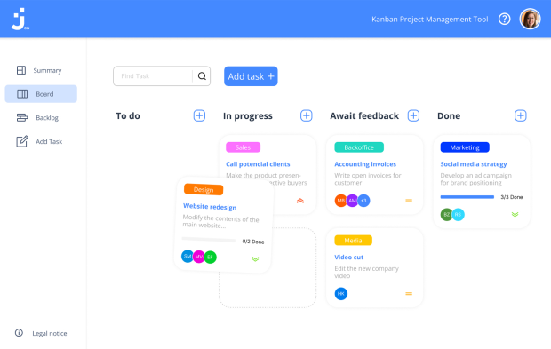

Pollo Loco
JavaScript | HTML | CSSJump, run and throw game based on object-oriented approach. Help Pepe to find coins and tabasco salsa to fight against the crazy hen.
Ring Of Fire
Angular | Typescript | FirebaseDive into this exciting multiplayer drinking game. Draw a card and follow the fun instructions to keep the party going.

Join
JavaScript | HTML | CSSTask manager inspired by the Kanban System. Create and organize tasks using drag and drop functions, assign users and categories.